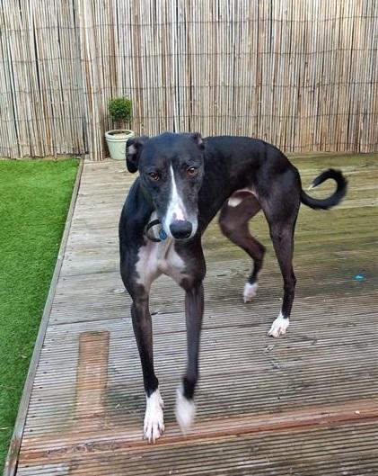

Adopt a Dog
Dogs available for adaption



Stacey and Toffee story.
Stacey and Toffee. Guide dog owner Stacey with her arm around guide dog Toffee He is my best friend, he is my soul mate. Stacey and Toffee is amazing partnership is highlighted in our new Sponsor a Puppy TV advert, Wall of Dreams. Stacey is eager for people to understand the important role that a guide dog can play in the life of someone with sight loss: “It’s not just a guide dog to help people from A to B, it’s someone’s lifeline.” She hopes that by sharing her story, she will be able to help other people like her.